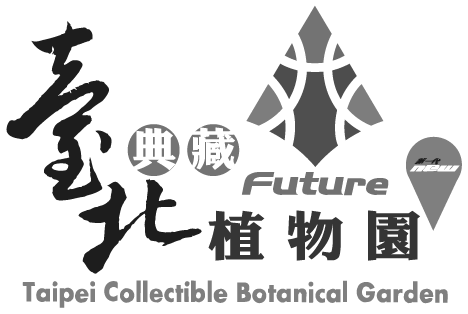

ABOUT THE FESTIVAL
Since its launch in 2006, the Taipei Digital Art Festival has grown into an annual celebration of digital art, bringing together internationally renowned works from around the world. Taking place in Taiwan, a global hub of high-tech development, the festival highlights the intersection of technology, humanities, and creative thinking.
As an important platform for digital art exhibitions and performances, the Taipei Digital Art Festival brings together award-winning works in digital art and performance, while fostering exhibitions and exchanges in collaboration with international professional institutions. Through the festival, local creators are given opportunities to broaden their perspectives, while the festival format brings together the creative energy of Taiwan’s digital art community.
Each year, the Taipei Digital Art Festival invites the public to discover the possibilities of digital art and provides artists and art enthusiasts with a platform to exchange ideas and share creative achievements. In recent years, the festival has further extended its digital art platform through connections with international curatorial projects, gradually developing into a global meeting point for digital art and creative communities.
CURATORIAL STATEMENT
在人工智慧和資訊技術迅速發展的當代，浮現出一種尚未被完全指認的存在形式，它在資訊海洋中運作，在大的資料流和演算法間生成出未曾見的樣態，並悄然嵌合進我們所處的世界。
2026臺北數位藝術節以「灰色自動體」（Gray Autonomous Entity）為主題，關注數位藝術如何在人工智慧的快速發展中，重新思考那些難以清楚認識、持續發展且無可迴避的新型態能動性、環境關係和藝術議題。
當人工智慧作為一種新的存在者（entity），成為影響藝術家的日常經驗乃至創作時，數位藝術應如何回應這種不同於工具、媒介所構成的存在？
它產生出另人感到既熟悉又陌生的經驗：熟悉，是因為它調用了人類共同累積的資料與記憶；陌生，則來自於自動性的湧現。
當資料經由編碼被壓縮進入模型，轉換為高維向量空間，影像、語言、聲音彼此建立新的鄰近關係，系統也在龐大的運算過程中形成自身的生成能力。每一次生成，都重新組織集體經驗；然而，模型承載著資料、記憶、文化，當中卻也存有權力結構、偏見與倫理問題。
如同植物、土壤、菌絲、動物、人類、機器一般，它如今也成為構成環境的一部分，與各種有機生命和非人行動者共同形成複雜的網絡，並成為當中的一個節點，重新定義生命、技術和環境間的關係。
這也成為當代數位藝術不得不面對課題：當藝術涉及資料的取樣、模型訓練與潛空間的運作和生成演算法，它是否仍然以人為中心？藝術世界又該如何面對？另外，有關藝術中的作者性、創造力、原創性與藝術形式等長久以來的概念，也因而重新被探討。
透過生成影像、機器學習、互動裝置和人機系統，關注那些重新思考資訊、生態、生命與非人存在的藝術實踐，並試圖描繪一個由人類、人工智慧與各種生命共同構成的新生態，便是2026台北數位藝術節「灰色自動體」的聚焦所在。
CURATORIAL TEAM
CURATORS

Lien-cheng Wang
Taiwan
Lien-cheng Wang is a new media artist, educator, and audiovisual performer. He is currently a full-time Assistant Professor in the Department of New Media Art at Taipei National University of the Arts. His practice focuses on interactive installation, sound, algorithmic imagery, and machine perception, with a long-standing interest in how technology intervenes in human perception, bodily experience, and social relations. Through programming, mechanical systems, and real-time computation, he develops interdisciplinary works across multiple media. His honors include First Prize in the Interactive Installation category of the Taipei Digital Art Awards, First Prize in the Taipei Digital Art Performance Awards, the 3D/Sculpture Award at the UK-based Lumen Prize, and First Prize in the Taipei Art Awards.
2025 Beyond the Machine, Kuandu Museum of Fine Arts, Taipei, Taiwan.
2023 BIENAL MADATAC #12, hispanoamérica, Madrid, Spain.
2019 PROYECTOR 2019, Medialab Prado, Madrid, Spain.
2018 Taipei Art Award, The First Prize, Taipei, Taiwan.
2018 12th Arte Laguna Prize, Nappe Arsenale Nord, Venice, Italy.
2017 Lumen Matrix - Lumen Prize for Digital Art, Today Art Museum, Beijing, China.
2017 Poland digital art festival, Małopolski Ogród Sztuki, Krakow, Poland.
2017 Ars Electronica Festival, Post City, Linz, Austria.
2017 The 4th Media Art, Gwangju Museum of Art, Gwangju, South Korea.
2017 Lumen Prize, The winner of 3D/Sculpture award, London, United Kingdom.
2017 YICCA International competition, The Rooster Gallery, Vilnius, Lithuania.
2016 UPDATE_6, Ghent, Belgium.
2013 Digital Art Performence Award, Taipei.
2009 Digital Art Festival Taipei 2009, The First Prize of Interactive installations, Taipei, Taiwan.

Yen-Ju Lin
Taiwan
Yen-Ju Lin is a new media artist, curator, and researcher. She holds an MFA in New Media Arts and a PhD in Fine Arts from Taipei National University of the Arts. Her artistic, curatorial, and research practices traverse art, information technology, and cosmological thought, examining how information, media, and systems shape both the world and artistic practice. Her work explores the relations between the real and the virtual, the visible and the invisible, and the human and the inhuman.
Grounded in her experience as an artist, Lin approaches curating as an artistic practice and a mode of creation, conceiving the exhibition as a generative field in which invisible relations and possibilities can emerge and take form. Her co-curatorial projects include Kuandu Light Art Festival – Quantum Entanglement, Zhongshan Hǎo Róng Yì – Outdated Daily, and Epicentrum, Observer Pattern, Echo Toward the Stargate, and Computational Evolution at Ars Electronica in Linz. She also curated Signal World [REC].
2026, Computational Evolution, Ars Electronica Campus, Linz, Austria
2025, Echo Toward the Stargate, Ars Electronica Campus, Linz, Austria
2024, Observer Pattern, Ars Electronica Campus, Linz, Austria
2023, Epicentrum, Ars Electronica Campus, Linz, Austria
2021, 2021 Zhongshan Hao Rong Yi – Outdated Daily, Zhongshan District, Taipei, Taiwan
2020, 2020 Kuandu Light Art Festival – Quantum Entanglement, Kuandu Museum of Fine Arts, Taipei, Taiwan
Curatorial Projects
2026, The 7th SLY Art Space Media and Moving Image Exhibition — Signal World [REC], SLY Art Space, Taoyuan, Taiwan
Journal Articles
2024, “Trans-dimensional Messenger: Artworks as a Media for Information Transmission”, Journal of Taiwanese Art, No. 129, National Taiwan Museum of Fine Arts.
Solo Exhibitions
2017, Long Stay – Yen-Ju Lin Solo Exhibition, FreeS Art Space, Taipei, Taiwan
Selected Group Exhibitions
2026, Can You See Me Now?, The Gem Theater / VTIFF, Bethel, ME / Burlington, VT, USA
2024, The Interest from the Street Corner, MOCA Taipei, Taipei, Taiwan
2021, Non-syntax, Calm & Punk Gallery / BnA Museum / Workshop Underground, Tokyo / Kyoto / Fukuoka, Japan
2021, Groundless, Pa Ta Taipei – PTT Space, Taipei, Taiwan
2013–2015, Schizophrenia Taiwan 2.0, Ars Electronica / transmediale / Maison des Métallos / Ambika P3 / Instants Video Festival / HELLERAU – European Centre for the Arts, Linz / Berlin / Paris / London / Marseille / Dresden, Austria / Germany / France / United Kingdom / France / Germany
2013, 8th Digital Art Festival Taipei – Data-Neurons, Songshan Cultural and Creative Park, Taipei, Taiwan
EXECUTIVE UNIT

arTecture brings together a dynamic team of professionals from diverse fields, including visual arts, performing arts, theater, stage and prop production, exhibition design, and event planning. The company has planned and delivered numerous major events across Taiwan, including the Taiwan Lantern Festival, land art festivals, floral art festivals, expos, and other large-scale cultural events.
With expertise spanning a wide range of disciplines, arTecture became the second company in Asia and the first in Taiwan to achieve ISO 20121 certification for its organizational event sustainability management system. Integrating the three pillars of economic, environmental, and social sustainability into event planning and execution lies at the heart of the company’s mission and core values.
WEBSITEPARTNERS
VENUE PARTNERS

Taipei Collectible Botanical Garden
Located in the Xinsheng Area of Taipei Expo Park, the Taipei Collectible Botanical Garden is an exhibition greenhouse that combines Diamond-Level Green Building design with horticultural innovation. Centered on the relationship between people, plants, and the environment, the garden brings together plant species from Taiwan’s diverse climates and regions, creating a microcosm of the island’s ecological landscape. It features the greatest variety of plant species per unit area among botanical greenhouses in Taiwan.
The greenhouse is organized into themed ecological zones, including native Taiwanese plants, tropical and subtropical plants, orchids and ferns, succulents, temperate plants, and alpine plants. With nearly 500 plant species on display, the garden showcases Taiwan’s rich biodiversity and offers a weather-independent, family-friendly destination for experiencing nature and environmental education.

TAIPEI EXPO FOUNDATION
Established by the Taipei City Government in 2011, the TAIPEI EXPO FOUNDATION is dedicated to the effective operation and revitalization of Taipei Expo Park. The Foundation manages the exhibition venues throughout the park while promoting the development of Taipei’s convention and exhibition, design, and innovation industries.
The Foundation also actively attracts and supports major international conferences, exhibitions, competitions, and events, helping to enhance Taipei’s global visibility and competitiveness while creating diverse spaces for recreation, cultural exchange, and industry engagement.
PARTNERS

C-LAB’s Future Vision Lab
C-LAB’s Future Vision Lab is a technology and media experimentation platform initiated by the Taiwan Contemporary Culture Lab (C-LAB), with a particular focus on immersive moving-image practices.
At its core is DOME, a dome theater that uses spherical projection technology to explore the possibilities of future visual culture and technological art. With strong R&D capabilities, the platform integrates image processing, projection stitching, hardware and software systems, surround sound, and architectural design. In addition to presenting exhibitions and performances and supporting creators in developing new works, the Future Vision Lab facilitates interdisciplinary experimentation, continually opening up new perspectives on future visual practices and innovative technologies.

Fluid Noise
Founded in 2011, Fluid Noise is dedicated to promoting experimental sound, creative coding, and audiovisual art. Its activities center on four key areas: promotion, education, creative development, and community building.
Through lectures, workshops, emerging artist development programs, and informal gatherings for creators, Fluid Noise connects organizations and communities in Taiwan and abroad while cultivating creative and production talent in the fields of experimental sound and audiovisual art.
Hyper Wave Taipei Space
Hyper Wave was formally established as an art collective in Taipei’s Wanhua District in 2022. Its founding members were artists selected for the Ministry of Culture’s 2020 “MIT” program, with independent artists and curators later joining the collective.
The name “Hyper Wave” reflects the shifting and uncertain nature of art in contemporary society. Embracing the identity of artistic wanderers, the collective seeks to bring the qualities of contemporary art into fragments of everyday life and to open up possibilities for dialogue through art within real-world contexts.
Through exhibitions, artist residencies, research projects, workshops, and public programs, Hyper Wave connects art practitioners from diverse cultural backgrounds and explores the relationships between art, place, and contemporary society. Its projects extend across Taiwan and internationally, fostering cross-regional dialogue and long-term collaboration.
WEBSITEZhongshan Community College
Established in 2003, Zhongshan Community College is operated by Daojiang High School of Nursing and Home Economics, with its main campus located on Xinsheng North Road in Taipei’s Zhongshan District. Guided by the principles of “lifelong learning and civic engagement,” the College integrates local history and culture with the district’s contemporary commercial character, offering a diverse range of courses in the humanities, practical and creative skills, and community activities.
The College is committed to fostering civic literacy and encouraging learners to participate in public affairs and local revitalization. Through flexible learning opportunities, it provides community residents with an accessible and welcoming platform for knowledge sharing, personal growth, and social connection.
WEBSITESPONSORS

Team Group Inc.
Team Group Inc. specializes in the development and production of its own-brand memory modules, memory cards, USB flash drives, solid-state drives (SSDs), peripheral products, mobile accessories, and industrial memory and storage solutions. In 2016, the company launched T-FORCE, its gaming product line, followed by T-CREATE, a product line designed for creators, in 2020.
Team Group Inc. products have received numerous design awards and international recognition, including the COMPUTEX d&i awards, Best Choice Award, Taiwan Good Design Product Award, Golden Pin Design Award, Taiwan Excellence Awards, Japan’s GOOD DESIGN AWARD, Germany’s iF Design Award 2021 and Red Dot Design Award. Its products have also earned widespread recognition from technology media around the world.

c2x3
c2x3 is a blockchain art media platform dedicated to the development of digital and generative art, with an ongoing focus on the evolving digital art markets and ecosystems in Taiwan and around the world.
Through articles, interviews, talks, exhibitions, and community events, the team documents developments in digital art within a global context while sharing perspectives from artists and collectors. By connecting the art, technology, and Web3 communities, c2x3 actively promotes and supports the creation and development of digital and generative art in Taiwan.

Austrian Office Taipei
Located in Taipei’s Songshan District, the Austrian Office Taipei is the official representation of the Republic of Austria in Taiwan. It is dedicated to strengthening exchanges between Austria and Taiwan across a wide range of fields, including culture, education, academia, and tourism.
The Office also provides consular services, including applications for short-stay visas, working holiday visas, and residence permits for Austria. It also issues Schengen visas on behalf of Greece. For Austrian citizens in Taiwan, the Office provides essential consular assistance, including passport services, document authentication, and emergency support.
Czech Centre Taipei
Established in June 2024, Czech Centre Taipei is part of the global network of Czech Centres under the Ministry of Foreign Affairs of the Czech Republic and works in close cooperation with the Czech Economic and Cultural Office in Taipei. As an important platform for Czech public diplomacy and cultural engagement, it aims to deepen the Taiwanese public’s understanding of contemporary Czech culture while fostering exchange between Taiwan and the Czech Republic.
Its programs span a wide range of cultural activities, including exhibitions, film screenings, lectures, and seminars, with a particular focus on design, literature, film, innovation, and gaming. Czech Centre Taipei also supports artist residency programs and collaborates with cultural institutions across Taiwan to create platforms for meaningful and sustained exchange between the two sides.
wemo

TIEDA
The Taiwan Interactive and Experiential Design Association (TIEDA) is dedicated to advancing research, exchange, and development in interactive experience design, interactive art, and human-computer interaction.
Through lectures, workshops, exhibitions, and interdisciplinary collaborations, TIEDA brings together creators and professionals from the fields of design, art, technology, and industry. By providing a platform for knowledge sharing and practical exchange, the Association seeks to expand the possibilities of interactive experiences in Taiwan.
MEWAY VISION
Since its establishment in 1995, Meway has specialized in video, LED displays, lighting, audio, and integrated technical production services. Backed by a professional team, extensive experience, and comprehensive equipment, Meway delivers high-quality audiovisual experiences for events of all scales.
From corporate events and product launches to exhibitions and large-scale performances, Meway combines professional planning, meticulous execution, and dedicated service to ensure that every memorable moment is seen, heard, and presented at its best.

Philips Monitors
Philips Monitors builds on the brand’s longstanding technological expertise to deliver visual experiences that combine performance and aesthetics through innovative technology, precise image quality, and user-centered design.
Its exclusive Ambilight technology synchronizes with on-screen content, extending colors and light beyond the display to create a richer, more immersive atmosphere. Whether watching movies, gaming, or enjoying music and entertainment, it brings every experience to life with greater sensory depth.
With high-resolution displays, smooth refresh rates, smart connectivity, and eye-care technologies, Philips Monitors meets a wide range of needs for both work and entertainment. By seamlessly integrating technology into everyday life, Philips Monitors expands every viewing experience through crisp detail and dynamic light.
Supporting Partner

Hong Foundation
Founded in 1971 by Chien-Chuan Hong, founder of National, the Hong Foundation is one of Taiwan’s earliest nonprofit cultural and educational organizations established with corporate support.
Guided by a spirit of “sowing seeds and pioneering new paths,” the Foundation has long been committed to advancing arts, culture, and education in Taiwan. Throughout its history, it has often been at the forefront of cultural development. In the 1970s, it founded Shu Ping Shu Mu (Book Review and Bibliography) magazine and played an active role in Taiwan’s folk music movement. Since the 1990s, its LEARNING PROGRAM has continued to foster adult learning in literature, history, philosophy, and the arts.
In recent years, the Foundation has shifted its focus toward supporting experimental and original contemporary art. Through initiatives such as the TUNG CHUNG PRIZE and QUESTION PROJECT, it provides multifaceted support for artists and creators while actively fostering a sustainable creative ecosystem in Taiwan.

Panasonic Taiwan
Established in 1962, Panasonic Taiwan is a key member of the Panasonic Group in Taiwan. Beginning with the production of radios and speakers, the company has expanded over more than six decades into a diverse range of businesses, including home appliances, audiovisual products, automotive electronics, electronic components, and smart solutions for commercial applications. Today, it maintains an integrated operation encompassing research and development, manufacturing, sales, and after-sales service.
In recent years, Panasonic Taiwan has increasingly integrated AI technologies into its green transformation initiatives, developing smart home appliance ecosystems and net-zero demonstration sites as part of its ongoing commitment to sustainability and improving quality of life.